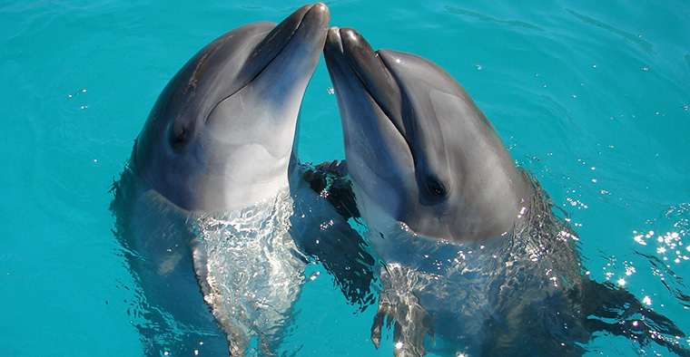
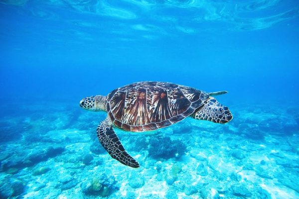
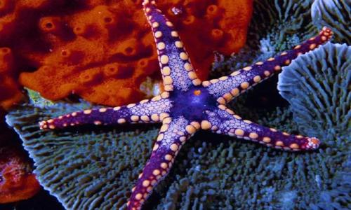

Naturaleza Marina
Delfines (Delphinidae)
Pueden vivir mas de 30 años
Tienen una longitud de 3,5 metros aproximadamente

Tortugas Marinas (Cheloniidae y Dermochelyidae)
Pueden vivir de 150 a 200 años
Pueden llegar a pesar hasta 300 kg

Estrellas Marinas (Asteroidea)
Pueden vivir de 10 a 34 años
Tienen la capacidad de regenerar brazos perdidos y crecer nuevos miembros
